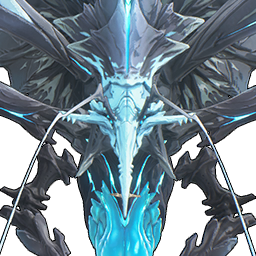

Lampylumen Myriad

Element: Glacio
The Trapper that dwells in the cold caves, obsessed with collecting and imitating sounds, can mimic human speech through the trembling hum.
The Lampylumen Myriad uses sound as bait, freezing the lured prey in the deep cold. The hallucinations brought about by hypothermia and dying, will make humans spill out the dying words that contain huge emotional fluctuations.
For the Lampylumen Myriad, this is the supreme delicious frequency.